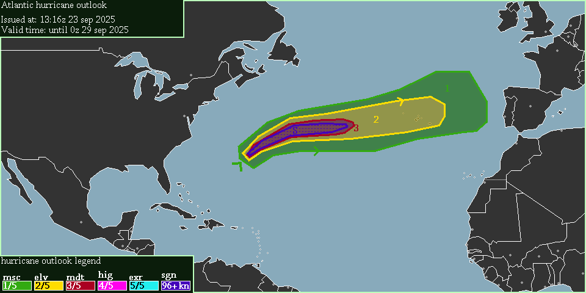
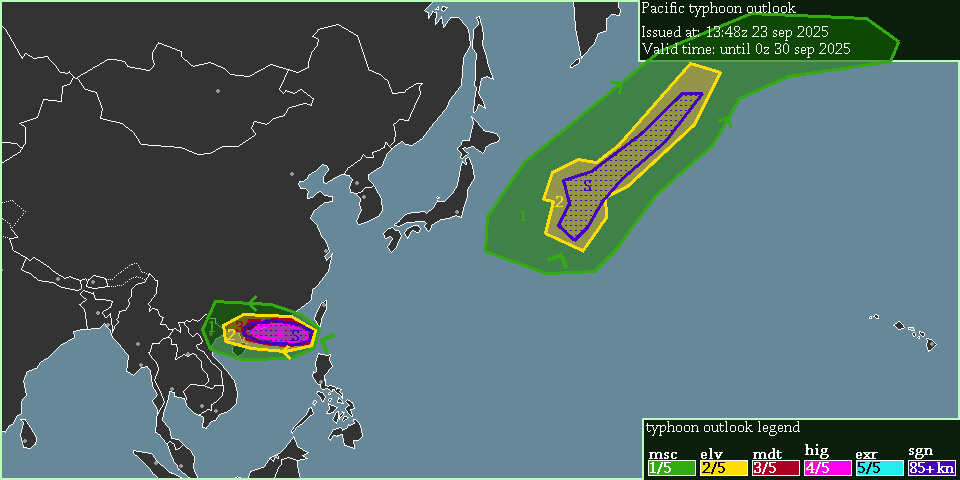

A level 3 moderate risk exists in the atlantic & east of Bermuda for tropical-cyclone Gabrielle.
Gabrielle is currently east of Bermuda, with a pressure around 945 hPa, & windspeed around 130 kt. Some models forecast windspeeds as high as 155 kt between Bermuda & the Azores.
-- Cenn Devel, 13:15z 23 sep 2025.

A level 4 high risk + sig-wind risk exists for tropical-cyclone Ragasa (Nando).
A level 2 elevated risk + sig-wind risk exists east of Japan for tropical-cyclone Neoguri.
Ragasa is extremely strong in the South-China-Sea right now, & is expected to make landfall between Hainan & mainland-China. winds of 90 kt may be possible on land.
Neoguri will stall east of Japan for multiple days, before moving northeast.
-- Cenn Devel, 13:47z 23 sep 2025.